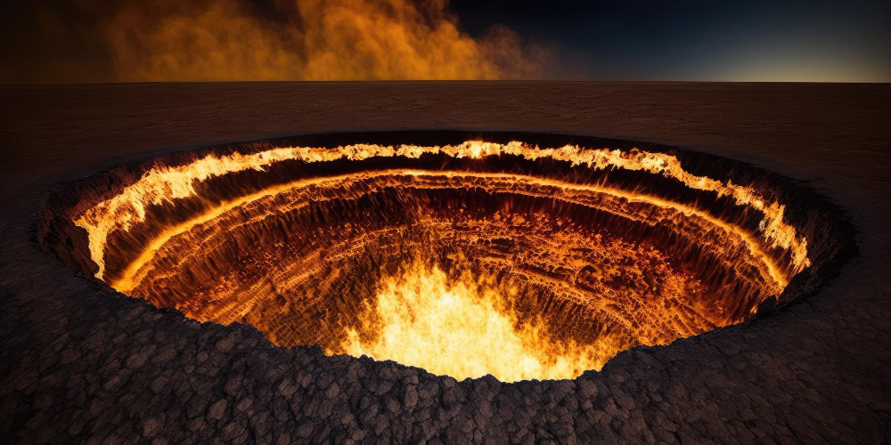

ประตูนรก หลุมยักษ์แห่งไฟที่ไม่เคยดับกว่า 50 ปี
เปิดเรื่องราวชวนฉงน ประตูนรกแห่งเติร์กเมนิสถาน หลุมยักษ์ที่เปลวเพลิงลุกโชติช่วงไม่เคยดับมากว่า 50 ปีแล้ว
หากพูดถึง "นรกบนดิน" แล้ว หลายคนอาจนึกถึงสถานที่ที่มีสิ่งแวดล้อมอันเลวร้าย เต็มไปด้วยความทุกข์ทรมาน เพราะมักจะถูกเปรียบเปรยด้วยคำนี้ แต่วันนี้เราจะขอพาไปดูสถานที่แห่งหนึ่งที่เป็นนรกบนดินของจริงไม่อิงคำเปรียบเปรยใด ๆ เลยล่ะ เพราะมันคือ "ประตูนรก" หลุมยักษ์กว้างใหญ่ที่มีเปลวเพลิงลุกสว่างไสวต่อเนื่อง ชวนให้นึกถึงกระทะทองแดงขนาดยักษ์ยังไงยังงั้น
ประตูนรก (Door to Hell) เป็นหลุมก๊าซกว้าง 70 เมตร ที่อยู่บนพื้นที่ทะเลทรายคาราคัมอันโล่งกว้าง ใกล้กับหมู่บ้านเดอเวเซ เมืองอาฮาล ประเทศเติร์กเมนิสถาน ถูกเรียกว่า "ประตูนรก" จากลักษณะหลุมที่เต็มไปด้วยเปลวเพลิงที่ไม่มีวันมอดดับ
สำหรับที่ไปที่มาของหลุมยักษ์แห่งนี้ เดิมทีแล้วเป็นทะเลทรายโล่งกว้าง กระทั่งเมื่อปี ค.ศ. 1971 วิศวกรของโซเวียตได้มาตั้งแคมป์ขุดเจาะน้ำมันบริเวณนี้ แต่หลังจากที่พวกเขาเริ่มการขุดเจาะเพื่อหาน้ำมัน กลับพบว่าที่ที่เขาขุดเจาะนั้นมีแต่ก๊าซมีเทน และต่อมาหน้าดินก็เกิดทรุดตัวเป็นหลุมก๊าซกว้าง ด้วยความกังวลว่าก๊าซมีเทนอาจจะทำอันตรายกับผู้คนที่อาศัยอยู่ในหมู่บ้านที่ห่างออกไปไม่ไกล วิศวกรจึงตัดสินใจจุดไฟเผาก๊าซในหลุมนี้ โดยคาดว่ามันจะดับภายในไม่กี่สัปดาห์ เมื่อก๊าซถูกเผาจนหมด
แต่ใครเลยจะเชื่อว่า นับตั้งแต่วิศวกรจุดไฟให้ลุกโชนขึ้นในหลุมยักษ์แห่งนี้ ไฟก็ไม่เคยมอดดับลงอีกเลย มันโชติช่วงร้อนระอุอยู่อย่างนั้นมายาวนาน 10 ปีผ่านไปก็แล้ว 20 ปีผ่านไปก็แล้ว จนถึงวันนี้กว่า 50 ปีผ่านไป ไฟในหลุมก็ยังคงเผาไหม้อยู่เหมือนเดิม
ปัจจุบันประตูนรกแห่งนี้ได้ดึงดูดใจให้ผู้คนที่ชื่นชอบการไปชมสถานที่อันท้าทาย น่าตื่นเต้น แวะเวียนมาเยือนรอบแล้วรอบเล่า ขณะที่ภาพถ่ายของมันก็ยังทำให้คนรุ่นใหม่ฉงนได้อยู่เรื่อย ๆ เพราะไม่มีใครคิดว่าในโลกใบนี้จะมีสถานที่แบบนี้อยู่จริง